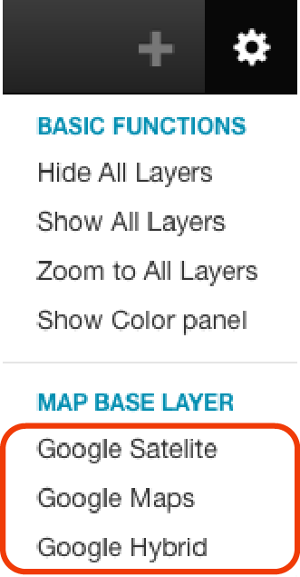

Select the base layer for the map
We can choose between three base background layers for our map using the  button in Sextant's main menu bar and then select the desired base map, as shown in the following figure. These layers are know as base map. By default, Sextant uses "BingMaps" as base map if a key is provided, else we use "OSM" as base map. To add a key for BingMaps, we set the variable BING_MAPS_KEY in the server-configuration.properties file under /Sextant/WEB-INF/classes/server
button in Sextant's main menu bar and then select the desired base map, as shown in the following figure. These layers are know as base map. By default, Sextant uses "BingMaps" as base map if a key is provided, else we use "OSM" as base map. To add a key for BingMaps, we set the variable BING_MAPS_KEY in the server-configuration.properties file under /Sextant/WEB-INF/classes/server
